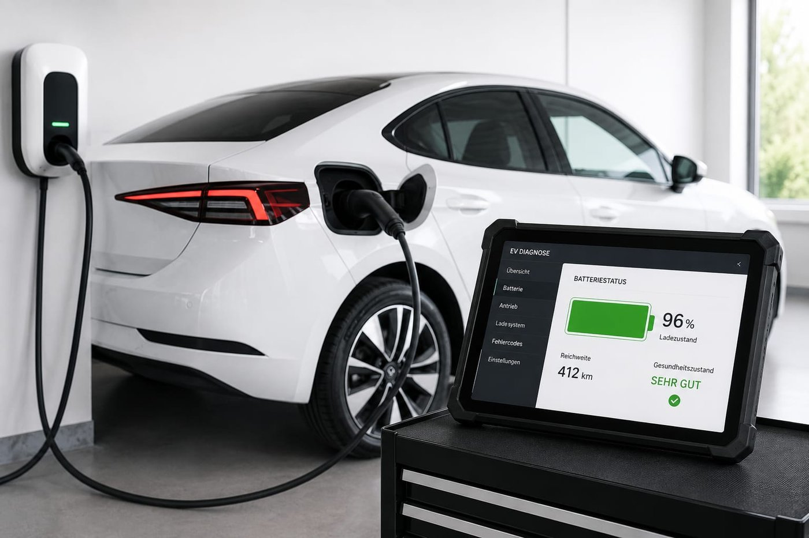
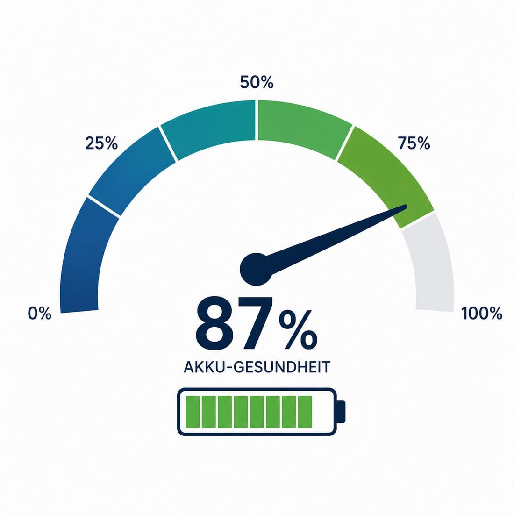

Wir ermitteln den echten Zustand (State of Health) der Hochvoltbatterie Ihres E- oder Hybridfahrzeugs – objektiv und messbar.

Die Batterie ist das teuerste Bauteil eines E-Autos. Ein gemessener State-of-Health-Wert gibt Ihnen Sicherheit – ob beim Gebrauchtkauf, im Garantiefall oder beim Verkauf.

Sie nennen uns Fahrzeugmodell und Anlass.
Wir lesen die Batteriedaten aus und bewerten den SoH.
Sie bekommen den belegten Akku-Zustand schriftlich.
Der SoH gibt die verbleibende Kapazität der Batterie im Vergleich zum Neuzustand an – in Prozent. Er ist der wichtigste Indikator für den Zustand eines E-Auto-Akkus.
Weil die Batterie das teuerste Bauteil ist. Ein schwacher Akku kann tausende Euro kosten – ein Gutachten schützt Sie vor einem Fehlkauf.
Für gängige Elektro- und Hybridfahrzeuge. Nennen Sie uns Marke und Modell – wir prüfen die Möglichkeit.
Die Begutachtung ist meist in kurzer Zeit erledigt; das schriftliche Gutachten folgt zeitnah.
Sicherheit vor dem E-Auto-Kauf oder Verkauf – lassen Sie den Akku messen.
Friedrich-Ebert-Straße 4 · 53919 Weilerswist · info@sv-hart-mauer.de
Kostenlos & unverbindlich. Antwort meist innerhalb 1 Stunde.